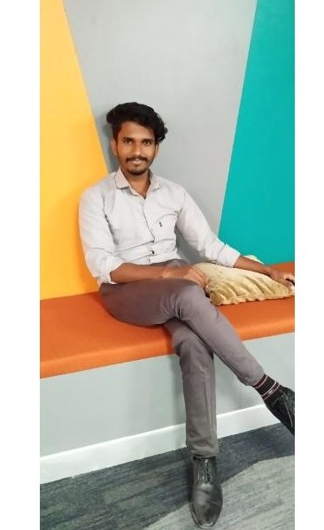

Pune, Maharashtra, India
Java Backend Engineer with 3+ years of experience in designing and developing microservices-based backend systems using Spring Boot and REST APIs. Proven experience in Docker-based containerization, Kubernetes orchestration, and Jenkins-driven CI/CD automation. Strong understanding of distributed systems, backend performance tuning, and secure API design, with experience delivering reliable services in Agile/Scrum teams.
Education: Bachelor of Computer Applications — Sastra University, Thanjavur (2026) · GPA: 8.0
Certificates: Cloud Digital Leader (May 2023) · Oracle Cloud Infrastructure Certified DevOps Professional (Sep 2025)
Client: Deutsche Bank · Domain: Banking
Projects: Transactions · Scheduled Reports · Automated Application Build and Deployment
• Developed Java microservices using Spring Boot to merge and process trade transactions.
• Implemented Merge Skip Null Strategy to merge transaction data without overwriting valid values.
• Built backend scheduling services for automated email-based transaction reports.
• Enabled configurable frequencies (daily / weekly / monthly / yearly) with secure, reliable delivery.
• Built & containerized services using Docker; deployed to Kubernetes and OpenShift.
• Supported Jenkins CI/CD pipelines; added health checks and monitoring; deployed after PR merges.
Client: Deutsche Bank · Domain: Banking
Projects: Transaction Notification · WFMS Lift & Shift
• Implemented transaction notification microservices to send real-time email alerts on trade events.
• Developed and consumed REST APIs for event communication.
• Implemented Kafka-based asynchronous messaging for real-time event handling.
• Integrated notification services with downstream business systems; ensured timely delivery.
• Participated in Lift & Shift migration; helped decommission legacy modules safely.
• Supported backend modifications and ensured smooth functional transition and stability.
Location: Bangalore
• Assisted in backend development and automation testing using Java and Spring Boot.
Consolidated downstream trade transactions to ensure data consistency and reliability.
• Built Spring Boot microservices to merge and process trade transactions.
• Implemented Merge Skip Null Strategy to preserve valid values while merging.
• Debugged, optimized, and resolved backend defects to improve service stability.
Automated generation and delivery of scheduled trade transaction reports via email.
• Developed backend scheduling services for report automation.
• Enabled configurable schedules (daily / weekly / monthly / yearly).
• Ensured accuracy, reliability, and secure delivery; reduced manual effort.
Automated build/deployment and real-time notifications for banking workflows.
• Containerized services using Docker; deployed workloads on Kubernetes/OpenShift.
• Supported Jenkins pipelines enabling automated builds and continuous delivery.
• Implemented Kafka-based asynchronous messaging for real-time transaction notifications.